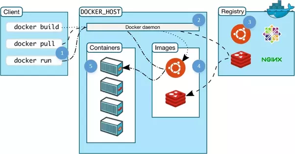

class: center, middle # Developing Microservices <br> with Node, React, Swagger with #3rd Party intigraton and Docker <div style="text-align:center; color:blue">  </div> <br><br> Presented by *Anil Joshi*, support by *RCS TEAM* --- ### Agenda -- ##### (1) Intro 1. Objectives 1. Architecture 1. Why Microservices? -- ##### (2) Containers and Services 1. Users DB 1. Users API 1. Movies DB 1. Movies Service 1. Web Service 1. Workflow 1. End-to-End Tests 1. Swagger -- ##### (3) Next Steps / Questions ✌️ --- ### About Me ``` I Openly accepted i take help from lot of open site like GITHUB, Stack Flowover. ``` -- ### Objectives By the end of this talk, you should be able to: 1. Configure and run **microservices** locally with Docker and Docker Compose 1. Utilize **volumes** to mount your code into a container 1. Run unit and integration **tests** inside a Docker container 1. Enable services running in different containers to **talk** to one other 1. Secure your services via **JWT-based authentication** 1. Configure **React** to work with Docker 1. **Auto reload** Python/Flask code running inside a Docker Conatiner 1. Test the entire set of services with **functional, end-to-end** tests`*` 1. Configure **Swagger** to interact with a service`*` `*`time permitting ⏱ --- ### Architecture | Name | Service | Container | Tech | |------------------|---------|-------------|----------------------| | Web | `web-service` | React, React-Router | | Movies API | `movies-service` | Node, Express | | Movies DB | `movies-db` | Postgres | | Swagger | `swagger` | Swagger UI | | Users API | `users-service` | Node, Express | | Users DB |`users-db` | Postgres | | End-to-end Tests | n/a | TestCafe | -- #### In general, services are... 1. Organized around domain 1. Easy to replace (mostly stateless) 1. Implemented using different technologies --- ### Why Microservices? -- - Complexity shifts from the inside (code, vertical stack) to the outside (platform, horizontal stack), managing each dependency, which *can* be good if you have a younger team in terms of developers. Junior developers are free to experiment and muck up smaller apps. You must have solid dev ops support though. <img src="images/microservices.png" style="max-width: 20%; border:0; box-shadow: none;" alt="microservice"> -- - Less coupling, which makes scaling easier -- - Flexible - different apps can have different code bases and dependencies -- - Smaller code base, less coupled, force solid API design, not having to understand the full system = easier to read code -- - **WARNING: They are hard!** --- ### Thanks!! -- RCS TEAM -- Every one